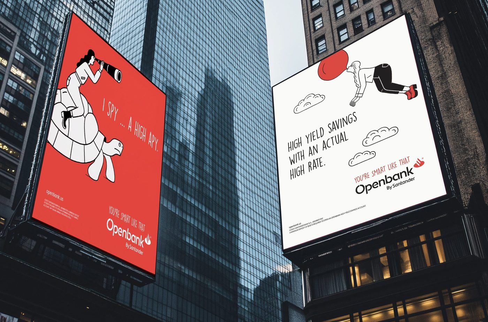
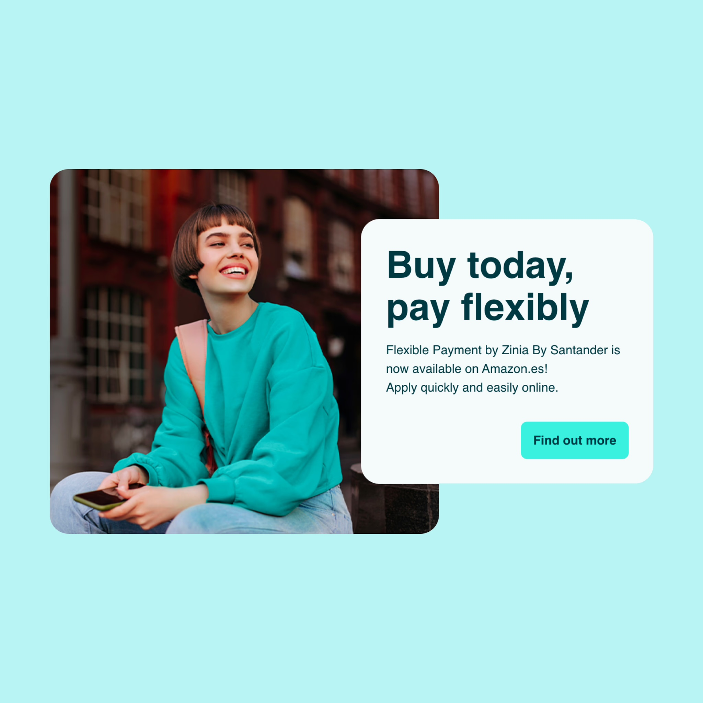
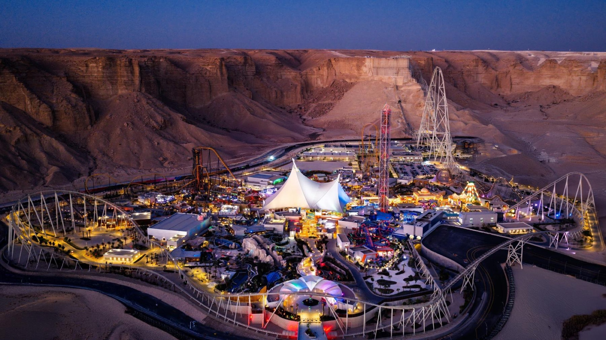

still cooking
Mortgage Advice Bureau · In progress
Still cooking.
Being built right now, with me on the team. The case study lands once the product has.
Michael Hanna is a product manager from Madrid. He has shipped a $2B digital bank, BNPL used by two million people, and guest platforms for giga-projects in the Middle East.



I’ve always lived between worlds.
With roots in the Mediterranean and family scattered across Europe and North America, I grew up navigating different cultures, perspectives, and ways of thinking. That early exposure taught me how to read between the lines, adapt with ease, and build with empathy. It shaped how I listen, how I solve problems, and how I lead.
Today, I’m a Product Manager working at the edge of finance, design, and technology. I’ve helped launch digital banks from scratch, shaped buy-now-pay-later platforms trusted by millions, built guest platforms for giga-projects in the Middle East, and partnered with top creative studios to craft experiences that feel seamless, both physically and digitally.
I thrive in the in between, where strategy meets uncertainty, and vision needs clarity. Whether I’m defining roadmaps, aligning teams, or breaking down complexity into something people love to use, I bring a balance of structure, curiosity, and intent with one goal:
Building products that feel human, no matter how complex they are underneath.
Everything here exists for exactly one reason: I wanted it to exist. No business case, no roadmap, nobody to convince.
on a laptop, the dark hands you a torch. here you just get the switch. same room, different toys.
I grew up playing Sonic. So when this site needed a 404 page, I built one you would want to hit on purpose: my pixel self, a hill, a few rings, and the page you were looking for somewhere past the spikes.
You get two runs. Then it is back to business.
I travelled a lot for work. Too many air miles, and a jacket pocket full of receipts that had to be sorted by trip, by project, by client lunch. I hated filing them.
I tried a lot of apps and did not like any of them, so I built my own. Everything stays on the phone, each receipt lands in the right trip by itself, and to export a trip you cut the stub off a boarding pass.